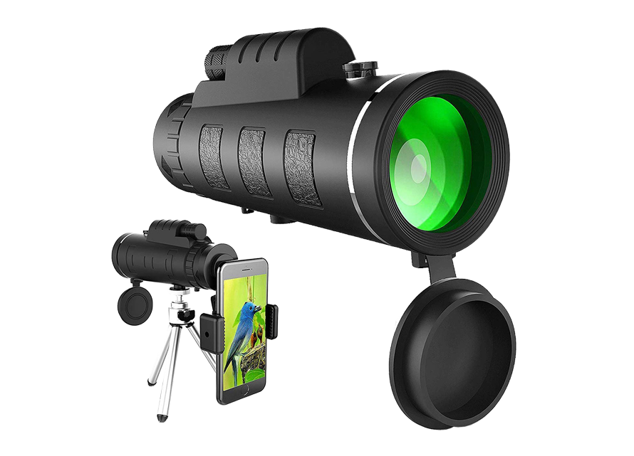
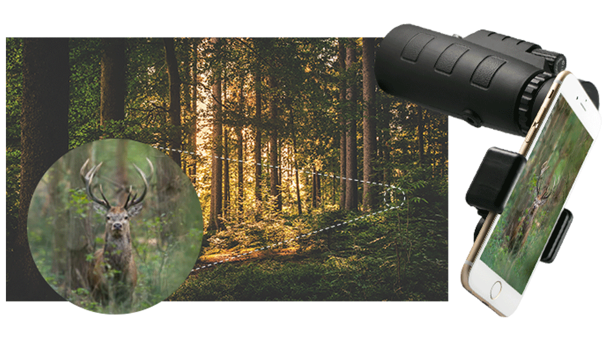
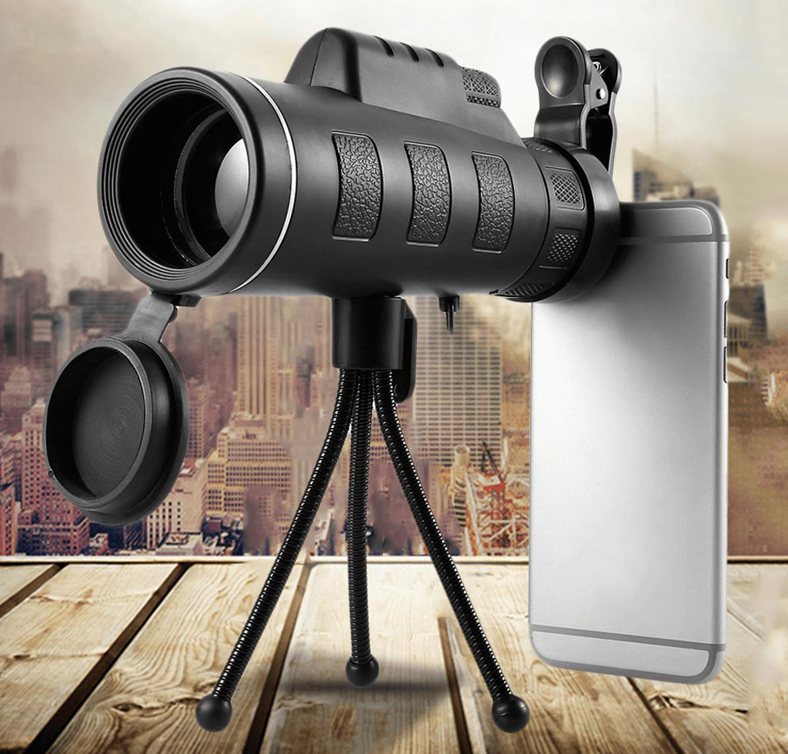

Every Outdoor Enthusiast Needs This
Tired of lugging around heavy, expensive camera equipment, telescopic lenses, and binoculars?
This super-sharp and ultra-compact zoom lens can fit right in your pocket! The lens is equipped with revolutionary optical technology that lets you view crisp, clear, gorgeous images that are as good as a high-end telescope lens!
It’s called the StarScope, and it’s now available in the US.
MEET STARSCOPE
This state-of-the-art monocular is made with the latest CNC technology, optical programs, and high-tech designs to create a reasonably-priced alternative that can compete with even the most expensive brands on the market.

ASPHERICAL COATED GLASS LENS
We’ve succeeded beyond our wildest dreams and are proud to offer our remarkable telescope to perfectionists who appreciate quality. That is, everyone from campers, hikers and tourists, to moms and dads who want to see what their kids are up to from a distance, will love this product.
The aspherical coated glass lens offers you much more colorful scenery and ensures excellent light transmittance to make your vision clearer and brighter. All of this WITHOUT carrying around heavy, expensive, bulky equipment!
POWERFUL ZOOM
See with your own eyes what the StarScope is capable of!

COMPACT AND LIGHTWEIGHT
The StarScope can be handheld or mounted to a tripod for more stability. It comes with a built-in tripod socket, perfect for mounting to a camera or for long-term observation! Save space and sacrifice nothing!
STARSCOPE FEATURES
Images made with the StarScope will beat any camera, we guarantee it! These are the detailed specifications: